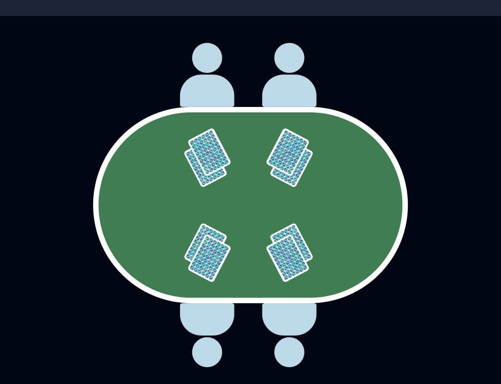
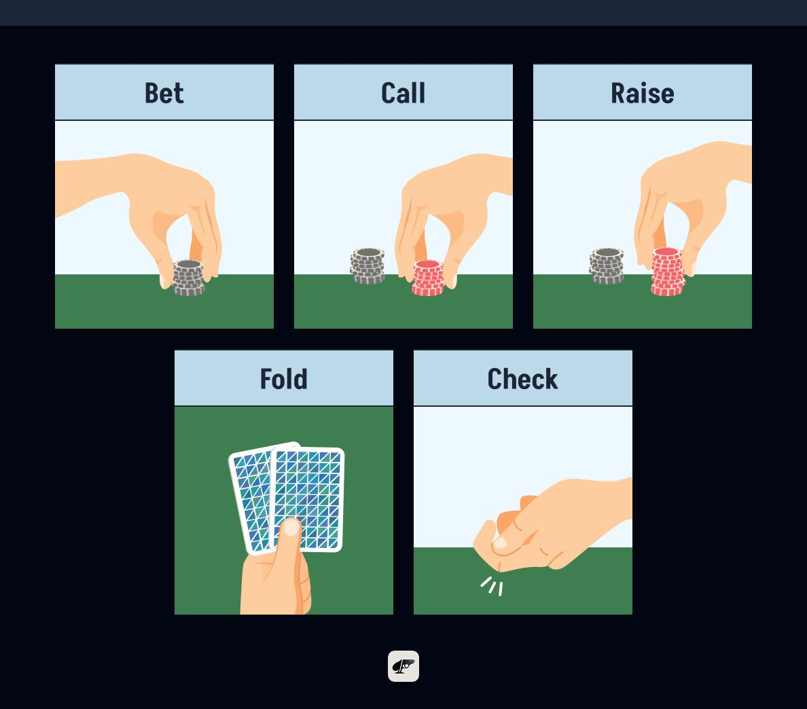
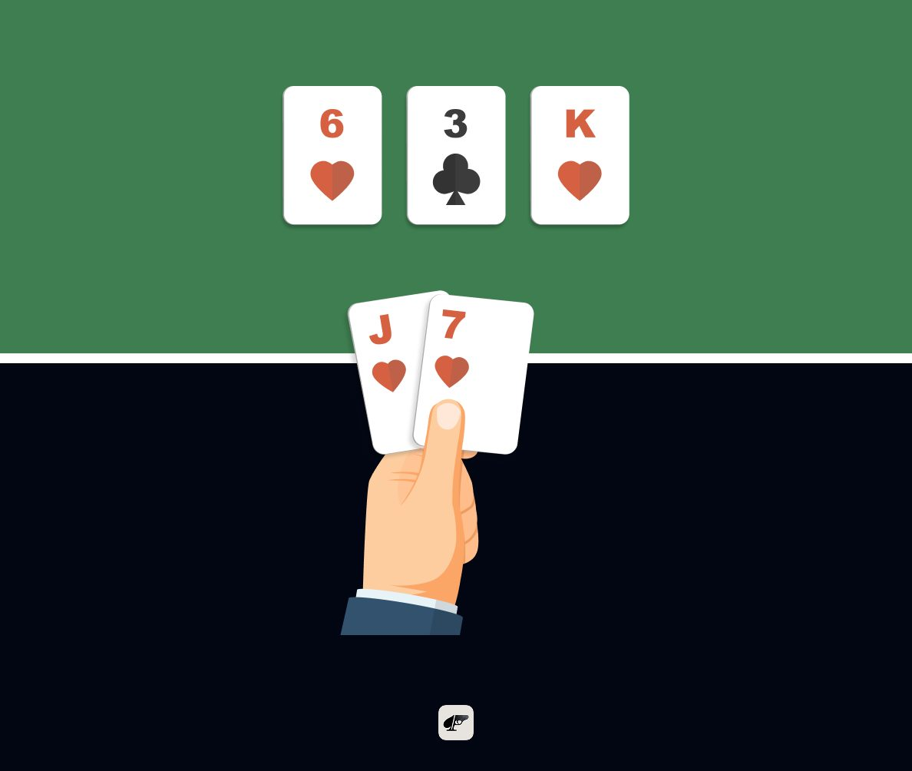
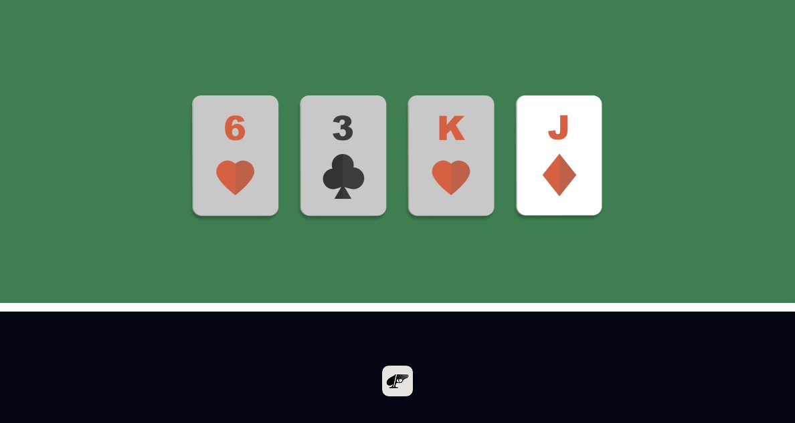
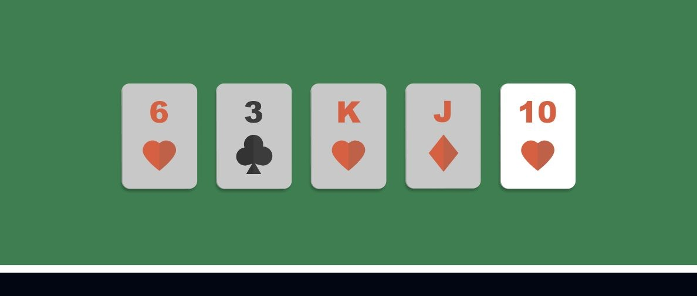
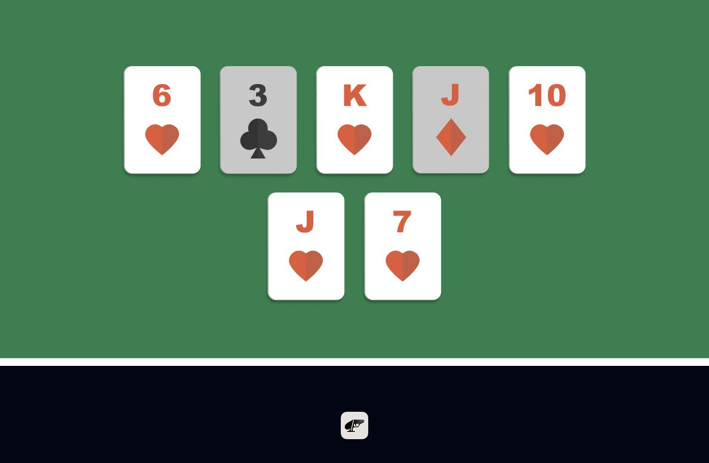
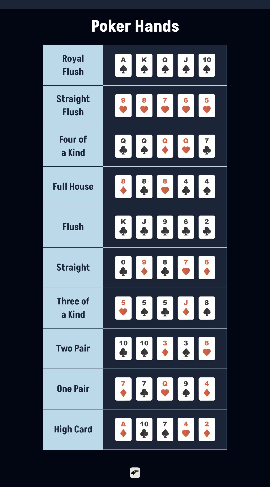

Ever watched a poker game and thought, “How do I learn to play poker?” Or maybe you’ve sat at a table, unsure what beats what, just hoping not to mess up your turn? You’re not alone. Poker can seem confusing at first, especially with all the different hands, rules, and versions out there.
What exactly makes a strong hand? How do betting rounds work? And what’s the difference between Texas Hold’em and Omaha? If you’ve been asking these kinds of questions, this guide is for you. We’ll break down the basic poker rules for beginners, walk through the most common poker hands for beginners, and explore some of the most popular styles of the game.
By the end, you’ll have the clarity and confidence to join a game, understand what’s going on, and actually enjoy yourself at the table. Let’s go!
How to Play Basic Poker: Texas Hold’em Game Flow for Beginners
Texas Hold’em is the world’s most popular poker game and often the first variant beginners learn. It is typically played with 2 to 10 players at a table, making it suitable for both casual home games and large tournaments.
Each player receives two private cards and tries to form the best five-card hand using a combination of those cards and five community cards dealt face up in the center of the table. The game progresses through four betting rounds: Pre-Flop, Flop, Turn, and River. Now, let’s get into the game flow.
As the Game Begins
The first thing to learn is your position. Texas Hold’em uses two special positions called the small blind and the big blind. These aren’t players’ names, just seats that rotate around the table. The players in those seats put a small amount of chips into the pot before the cards are dealt. This ensures that every hand has a little action right from the start.
In some games, there’s also an ante, which is simply a small bet from every player each round. You’ll see this more often in tournaments or other variants, but not always in home games. These forced bets ensure there’s always something to play for and prevent players from folding endlessly while waiting for perfect cards.
Once the blinds are placed, the dealer begins by burning one card to reduce predictability. The dealer then hands out two private cards to each player, moving clockwise around the table from the left. These face-down cards are called hole cards, and they belong only to you.
Players usually keep their hole cards hidden from everyone else until the showdown, even if another player has already folded. Revealing your cards too early can give away valuable information.

The Pre-Flop Round
Now that everyone has two private cards, the first decision-making moment happens. One by one, players take turns deciding what to do. You have several options, but don’t worry, they’re all simple:
- Fold: Decide you don’t want to play this hand and push your cards away.
- Call: Match the amount of the big blind so you can stay in the hand.
- Raise: Put in more chips to “up the stakes” and pressure the others.

You might hear the word check, but that only becomes possible later when no one has placed a bet yet. For now, before the table cards appear, someone has already posted the blinds, so you must call, raise, or fold.
This first round is called pre-flop because no cards have been placed on the table yet. Everything is based entirely on your two private cards and your gut feeling.
The Flop

After the pre-flop decisions are made, the dealer reveals three face-up cards in the center of the table. The table opens. These are the first community cards, which means everyone can use them along with their hole cards to form a five-card hand.
This moment is called the flop, and it’s often where beginners’ eyes light up. Suddenly, you’re not guessing anymore. You can now see how your hand is starting to take shape.
A new betting round begins. This time, if no one bets before you, you can choose to check, which means staying in the game without adding chips. But you can still bet, call, raise, or fold depending on how strong you think your emerging hand is. Also note that at any stage, a hand can end if everyone folds to a single bettor.
The Turn

Next, a fourth community card is added to the table. This is called the turn. With each new card, the possibilities grow, pairs become three of a kind, straight draws appear, and flushes start to take shape. (We will introduce the poker hand rankings later.)
Another betting round follows. Now, depending on the type of poker you’re playing, the betting structure becomes important.
There are usually 3 types of limits:
- Fixed Limit: Often called “Limit”, this structure uses set, predetermined bet sizes. Early rounds use small bets, and later rounds use slightly bigger ones. Players can only raise a few times each round, which keeps the action steady and predictable. Because the bet sizes stay controlled, this format feels calm and methodical. It’s ideal for beginners or anyone who prefers a slower pace where decisions matter more than dramatic chip swings.
- Pot Limit: This structure gives you more flexibility. Players may bet up to the total amount currently in the pot, which means bets grow naturally as the pot grows. It offers a nice balance: bigger, exciting moments are possible, but the structure still prevents huge, sudden moves too early. Many players enjoy Pot Limit because it encourages thoughtful strategy without feeling overwhelming.
- No Limit: This means players can bet any amount in front of them at any time. There are no preset limits and no cap on raises. This makes the game fast, expressive, and full of dramatic momentum shifts. The open structure encourages bold plays, creative pressure, and dynamic interactions between players. It’s the most popular format for those who enjoy a highly flexible, high-energy style of play.
| Structure | Betting Limits | Raise Caps | Typical Play Style |
|---|---|---|---|
| Fixed Limit | Fixed small/big bets only | Yes (usually 3–4) | Low variance, focus on odds, minimal bluffs |
| Pot Limit | Up to the amount currently in the pot | No (subject to pot) | Balanced, strategic post-flop play |
| No Limit | Up to full stack | No | High risk/reward, unpredictable, aggressive, psychological |
This is where the game’s pace can shift. In No Limit, especially, the pressure ramps up, and players start making bold moves. If you prefer slower, steadier decisions, Fixed Limit is often the best starting point. Pot Limit sits right in the middle, thoughtful but not overwhelming.
The River
The river is the fifth and last community card placed on the table. At this moment, all information is available: your two private cards, the five shared cards, and the full picture of what everyone might have.

One final betting round takes place. For many players, the river is where the tension peaks, as some hands improve dramatically, while others miss their draws entirely. Whether you check, bet, call, raise, or fold, this decision closes the story of the hand.
The Showdown

If two or more players remain after the final betting round, it’s time for the showdown. Everyone reveals their hole cards, and the best five-card poker hand wins the pot.
This is where the hand rankings come into play: royal flushes, straights, full houses, pairs, high cards, and everything in between. Even beginners quickly learn to recognize these combinations because the community cards make it easy to see patterns. And don’t worry, the dealer or other players will often help you read your hand at first. (We will also talk about this later.) It’s all part of learning.
Once you’re comfortable, you might encounter Short Deck Hold’em, a fast-paced version of the game played with only 36 cards. Removing the low cards changes the odds and makes stronger hands appear more often. Check out our guide on Short Deck Hold’em for more!
Important Terms for Poker Beginners
Poker Hands and Rankings
In poker, understanding hand rankings is key to knowing which combinations are the best hands and how likely you are to get them. Each hand has its place in the hierarchy, from the rare and powerful royal flush to the common high card.
The probability of landing these hands varies significantly; for example, a royal flush is extremely rare, while a pair or two pairs appears much more frequently. Knowing the probability of each hand not only helps you recognize strong combinations but also improves your decision-making as the game unfolds.

| Rank | Hand | Examples |
|---|---|---|
| Royal Flush | A K Q J 10, same suit | A♠ K♠ Q♠ J♠ 10♠ |
| Straight Flush | Five sequential cards, same suit | 9♥ 8♥ 7♥ 6♥ 5♥ |
| Four of a Kind | Four cards same rank | Q♣ Q♠ Q♦ Q♥ 7♣ |
| Full House | Three of a kind + a pair | 8♦ 8♠ 8♥ 4♣ 4♠ |
| Flush | Any five same-suit cards | K♣ J♣ 9♣ 6♣ 2♣ |
| Straight | Five in sequence, mixed suits | 0♠ 9♦ 8♣ 7♥ 6♦ |
| Three of a Kind | Three same-rank cards | 5♥ 5♠ 5♣ J♦ 8♠ |
| Two Pair | Two different pairs + one card | 10♣ 10♠ 3♦ 3♠ 6♥ |
| One Pair | One pair + three unmatched | 7♦ 7♣ Q♥ 9♠ 4♦ |
| High Card | The highest card when no others are made | A♦ 10♣ 7♠ 4♥ 2♦ |
The Kitty, Chips, and Banker
In most poker games, chips are used instead of real money to make betting easier and more organized. Each player buys in with a set amount of chips, which represent their total playing stack. Of course, chips are not always necessary. There are various ways to play poker without chips.
Some home games also use something called the kitty. This is a small side pot collected from players (usually by taking a chip from each large pot) and used for shared expenses, like buying snacks, replacing cards, or tipping a dealer. It’s not part of the main gameplay, but it's good to know in casual settings.
The banker is the person in charge of managing the chips and keeping track of buy-ins and cash-outs. In casino games, this is handled by the house. In home games, the banker may also double as the dealer.
Table Stakes and Side Pots
Texas Hold’em uses a rule called table stakes, which simply means you can only play the chips you had at the beginning of the hand. You can’t add more midway through. If you run out of chips while calling a bet, you only compete for the amount you contributed; any extra chips from other players go into a separate side pot. This system keeps the game fair and prevents anyone from “reloading” just to overpower others in the middle of a hand.
Poker Rules for Beginners: Other Game Versions
Apart from Texas Hold’em and Short Deck, poker comes in many forms, but most games follow the same flow: players take actions through a series of betting rounds, using their cards with a bit of luck to build the strongest hand for winning. Here’s how some of the most popular versions work:
Omaha
Omaha is very similar to Texas Hold’em in terms of setup, betting rounds, and use of community cards. However, the biggest difference is that each player is dealt four hole cards instead of two. To build your final five-card hand, you must use exactly two of your private cards and exactly three of the community cards. Like Hold’em, Omaha is also played with 2 to 10 players and follows the same four betting stages.
With more hole cards, there are more possible hand combinations, which leads to stronger hands and bigger pots. It’s a game full of action, but it also demands more careful thinking, because the extra cards give you more chances to win, but also more chances to misread your hand. Omaha rewards strategy and patience in a very different way than Texas Hold’em.
Draw Poker and Stud Poker
While Hold’em and Omaha dominate the tables today, classic poker has a rich variety of other formats. Here’s a breakdown of some old-school styles and how they compare:
Draw Poker
In Draw Poker, each player is dealt a complete hand face down, usually five cards. After the initial round of betting, players have the option to discard some cards and draw new ones from the deck in hopes of improving their hand. There are no community cards. What you’re dealt and what you draw is entirely private.
Compared to Texas Hold’em, which uses shared community cards and involves complex betting through the flop, turn, and river, Draw Poker is more straightforward. It’s especially popular among beginners because it emphasizes individual hand strength and simple decision-making, rather than positional play or reading shared board texture.
Stud Poker
Stud Poker is a more strategic format where players receive a mix of face-up and face-down cards over several betting rounds. The most common version, Seven-Card Stud, gives each player seven cards in total (three face-down and four face-up), with the best five-card combination winning the pot.
Unlike Texas Hold’em, there are also no community cards, and players don’t draw new cards mid-hand. The visible upcards introduce a layer of open information, allowing for more advanced reading of opponents’ potential hands. This format relies less on bluffing and more on memory, observation, and timing, making it a favorite for players who prefer methodical, information-driven play.
| Variant | Deal & Play Style | Key Feature |
|---|---|---|
| Draw Poker | Full hand dealt face-down → discard/draw phase → showdown | Simple gameplay, perfect for beginners |
| Stud Poker | Cards dealt in rounds, mix of face-up & face-down | Strategic depth from visible cards |
Test Your Skills at the Best Poker App for Beginners—Pokerrrr 2
Now that you've got a solid understanding of the basic rules, common terms, and different styles of poker, from Texas Hold’em to Omaha, it’s time to put that knowledge to the test. Poker is one of those games you truly learn by playing, and there's no better (or more fun) way to sharpen your skills than jumping into a game with friends.
That’s exactly where Pokerrrr 2 steps up to the table.
With Pokerrrr 2, you can host private games, create your own Poker Club, and enjoy smooth, real-time action in Texas Hold’em, Omaha, Short Deck Poker, Blackjack, and other easy poker games. Whether you're brand new or building up confidence, it’s the perfect place to play at your own pace—no pressure, all fun. You can chat in-game, track hand histories, and experience the social energy of poker night anytime, anywhere.
Ready to go from learner to player? Download Pokerrrr 2 now and turn everything you've just learned into real-time action with your crew.